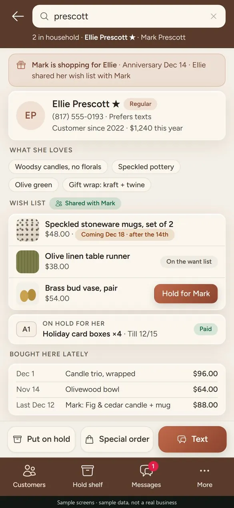
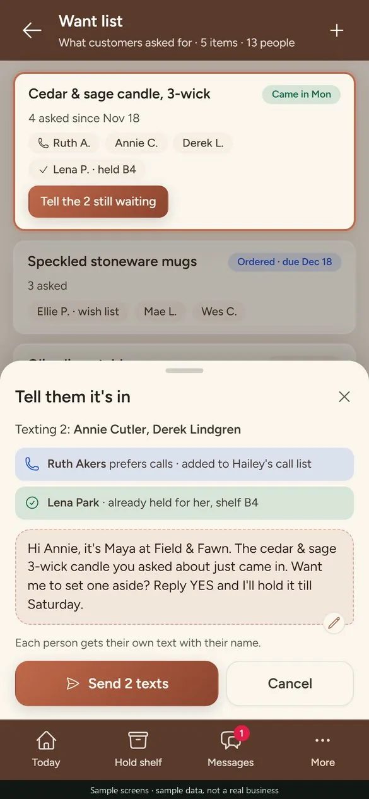

Industries / Retail & Local Shops
Retail & Local Shops · Sample CRM
A day at Field & Fawn
The notebook under the counter, on a screen
Field & Fawn's CRM keeps track of what's on the hold shelf, who asked for what and which regulars deserve a personal text. One tap tells a customer their order is in, and "do you have it?" calls get answered after hours.
Built around regulars, holds and special orders, the want list, and telling people when it's in.
Sample screens






What owners get
- A hold shelf you can see at a glance
- Customer notes on what people like and asked for
- "It's in" texts in one tap
- After-hours calls answered
Fill out a short form. We call you, then send you a demo.
 See the website
See the website